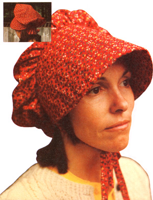
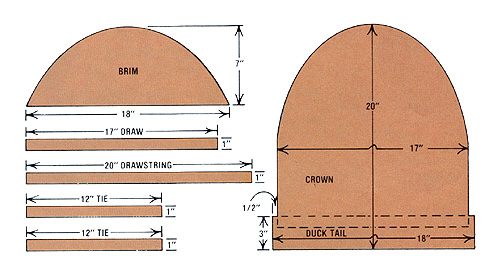
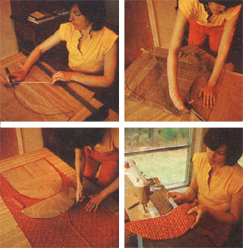
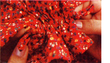

Summer sunbonnets have been worn by the ladies in our family for the past six or seven generations. My 84-year-old grandmother-who taught me how to make the head coverings-used to handstitch hers up out of turkey-feed sacks back in the days when bulk grain came in fancyprint cotton bags instead of today's "modern" paper containers. And she worked from a pattern-the very one I'm going to pass along to you nowthat was handed down to her ages ago by her mother-in-law.
I suppose I'm about the first member of our family to make a sunbonnet with the help of a sewing machine. You may use one too if you wish, but it's certainly not necessary. And I'm sure you'll have no trouble following my simple instructions . . . even if you've never sewn before!
A sunbonnet may be made of most any washable cloth you prefer . . . such as common cotton, muslin, or even lightweight denim. The main requirement for bonnet material is the ability to withstand many washings and considerable exposure to the sun without becoming too limp or faded. Then too, since it's difficult to iron a sunbonnet, the fabric used in one of these ruffled head coverings should also be fairly wrinkle resistant.
You'll need 1-1/2 yards of a 36-inch-wide, brightly flowered print in your favorite colors plus a 36-inch by 18-inch piece of heavy muslin (or any other stiff, washable cloth that can be used as padding) to make the bonnet shown here.
Copy my grandmother's original pattern to size by following the measurements shown in the illustration and drawing them onto brown grocery bag or heavy wrapping paper.
The large semi-oval piece will become a fluffy CROWN that fits over the back of your head . . . while the long flap across its end forms a DUCK TAIL which hangs down to protect the nap of your neck. The bonnet's BRIM, or sunshade, will be made from the smaller half-oval. . . while the four strips are destined to become a DRAW, DRAWSTRING, and two chin-strap TIES. (Eventually the DRAW will be sewn right across the back of the DUCK TAIL to make a hollow "tube" for the DRAWSTRING to fit through. This positioning of the DRAW is indicated in the illustration by dotted lines.)
After you've drawn all six pieces of your bonnet pattern to size on paper . . . cut them out, lay 'em on your cloth, and pin them in place. As you arrange the paper templates on the fabric, remember that you'll need one CROWN, two BRIMS, one DRAW, one DRAWSTRING, and two TIES cut from the good material . . . and three additional BRIMS scissored out of the muslin. (You will, of course, need only one each of the paper patterns-some of which will be used more than once-to make all of these cuts.)
When you scissor out the pieces of fabric, leave about 1/4-inch of extra material on every side of each part so you'll have something to fold over later into a neat hem. And do bear in mind-since hems on a sunbonnet are used simply to cover up rough-cut or frayed cloth edges-you may incorporate some of those hems into various rows of stitching (seams) as the pieces are sewed together.
[1]Make a sandwich of the five BRIM pieces (stack the three muslin BRIMS together and top 'em first with one of the fancy-cloth pieces facing right side up and then with the other print fabric section turned right side down) and stitch through all layers along the BRIM's curved edge . . . trim away any excess fabric on the outside edge of the stitching . . and turn the creation "inside out" (which will be, in fact, right side out) so that the "pretty" sides of the two fancy fabric sections are exposed. Now make several parallel rows of stitches front to back at one-inch intervals all the way across the stacked material. This quilting stitch will not only hold the muslin padding in place when the cap is washed ... it will also give the BRIM enough body to make it stand out over your forehead when the finished bonnet is worn.
In the old days Grandma used to further stiffen the front of her sunbonnets by inserting some hand-cut cardboard "ribs" in between the rows of stitching on her head covering's BRIM. The idea was a good one . . . except that she then had to laboriously remove and reinsert the stiffeners each washday to keep them from getting soggy.
Thanks to modern technology, however, you can now go Grandma's original idea one better and do a little recycling at the same time. Now? Just cut some strips about 1/2-inch wide or a little wider and long enough to reach all the way from the front of your sunbonnet's BRIM to its rear . . . from a plastic one-gallon milk or bleach jug. Once they're inserted and sewn in place, you can leave the plastic stiffeners there forever.
[2] Stitch the edges of the DRAW, lengthwise, to the underside of the DUCK TAIL to form a tube for the DRAWSTRING. (Turn the raw edges of the fabric under before sewing to give the casing a finished look.) The DRAW should be lined up so that its center is just even with the imaginary line that joins the DUCK TAIL to the CROWN. And don't stitch the two ends of the DRAW at this time . . . just leave them open. (You might also wish to hem the rough edges of the DUCK TAIL at this point.)
Next take the DRAWSTRING material . . . fold its long edges in so that they meet in the center, and then fold the piece again in half lengthwise so it will be about 1/4-inch wide . . . and run a long stitch all the way down the length of the material to turn it into a thick "string". Stuff this string through the hollow space that was formed when you sewed the DRAW to the DUCK TAIL . . . and temporarily pin the DRAWSTRING in place.
[3] Now you're ready to sew the flat edge of the BRIM to the round edge of the CROWN. And if you haven't done a lot of sewing, you're in for a surprise here: It's impossible to make the two pieces fit together (since the curved edge of the CROWN is so long) . . . unless you "gather" the CROWN's cloth as you go. This means that you will sew about three times as much CROWN material as you do BRIM material . . . but if you do the job properly (bunch the excess CROWN fabric evenly along the BRIM's edge) your finished bonnet will have a nice "baggy" look. You'll find it much easier to bunch the "gathers" evenly, by the way, if you first sew a wide running stitch along the rounded edge of the CROWN material, pull up the gathers along this thread till the fabric fits the BRIM, adjust the folds evenly, and pin the two fabric pieces together just as you want them before machine stitching your seam.
[4] Scrunch up the DUCK TAIL by pushing both ends toward the center as you pull out on each end of the DRAWSTRING. This (a) will create decorative folds of cloth that will hang down around the nape of your neck and (b) will allow you to adjust the bonnet to ride either high or low on your head, as you desire. Try the cap on while holding the ends of the DRAWSTRING ... then loosen or tighten the folds for a comfortable fit. Finally, pin-and then stitch-the edges of the DUCK TAIL to the DRAWSTRING . . . then tie the "leftover" ends of the DRAWSTRING off into little bows.
[5] The last items you should add to your new sunbonnet will be the two chin-strap TIES. First, fold each one lengthwise twice and stitch it exactly as you folded and stitched the DRAWSTRING. Then sew the two straps-one on each side-to the BRIM's rear edge, very close to where it joins the CROWN. You may wish to safety-pin the TIES into place first . . . try on the bonnet again . . . then check the chin straps for position before you sew them to the BRIM.
That's it! You've now got a beautiful sunbonnet, and you made it all by yourself ... with just a little help from my grandma! And, if you're really excited by what you've accomplished, I have two suggestions for your next project: You may "gussie up" the BRIM by adding lace ruffles, bows, embroidery, or any type of fancy decoration you choose. Or . .. why not buy more material and put together two or three bonnets for friends? (This pattern will make an adorable little sun cap for a baby if you cut all the measurements in half.)
Finally, once you've become familiar with the basic design (and the function of all the parts) of this oldtimey head covering, experiment with slight measurement variations to make truly unique gifts and presents for birthdays and holidays!
PHOTOS BY STAFF
|
|
 |
 |
|
 |
 |
|